公鑰加密簡介
翻自 A Deep Dive on End-to-End Encryption: How Do Public Key Encryption Systems Work?, EFF.
如果你會正確使用端到端加密，它可以防止你傳送的訊息、文字甚至檔案被除了參與者之外的人檢視。端到端加密同樣也可以保證你收到的訊息來自一個特定的人，而沒有被篡改。
過去幾年中，各類工具讓使用端到端加密越發簡單。比如 Signal 就是一個應用端到端加密的通訊工具 - 你可以通過 Signal 聊天，收發檔案，或是打語音/視訊電話。這些安全的通訊工具在傳送人和接收人之間使用端到端加密來加密資訊。加密使得網上的竊聽者只能讀到一堆無意義的垃圾。你用的網路提供商甚至就可能是竊聽者之一。
儘管現在有很多方便使用的端到端加密工具，有一些端到端加密的實現還不是那麼容易理解和使用。因此我們建議你在利用加密增強你的線上隱私之前，先了解公鑰加密，或是非對稱加密的一些基本知識。
本教程要講解的加密型別，也是端到端加密所依賴的型別，叫做公鑰加密。關於其它型別的加密，你可以閱讀我們的另外一篇教程：What Should I Know About Encryption?
在本文中，你會了解一些非常重要的資訊，比如公鑰加密的能力和限制。這些知識能讓你在正確的時間用正確的方法使用公鑰加密 - 總而言之，讓你能更有效地使用公鑰加密。
加密是什麼？
我們來舉個例子，比如你要加密傳送一條訊息：
-
一條清晰可讀的資訊，比如（“嗨，媽媽”）， 被加密編碼成一個沒人看得懂的資訊 ("OhsieW5ge+osh1aehah6").
-
加密後的資訊經由網際網路傳輸。如果有人嘗試閱讀這條資訊，他們只能讀到看不懂的 ("OhsieW5ge+osh1aehah6").
-
當這條資訊到達目的地，我們預期的收件人有某種辦法將資訊解密回原始資訊（“嗨，媽媽”）。
對稱加密：用單個金鑰傳小紙條的故事
Julia 想給 César 傳一個小紙條，告訴他 "Meet me in the garden"（課後在花園見面），但她不想讓紙條經手的同學讀到其中的內容。
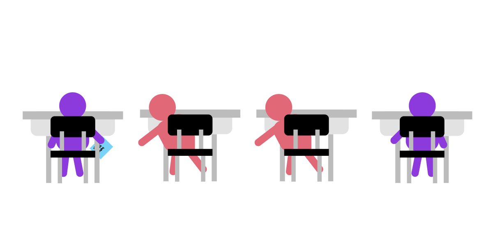
Julia 在傳紙條到 César 的過程中需要經手一堆愛管閒事的同學，它們都會把紙條瞄一眼再傳遞到下一個人。並且他們也會在傳下去之前把資訊記下來，同時寫上 Julia 給 César 傳紙條的時間。
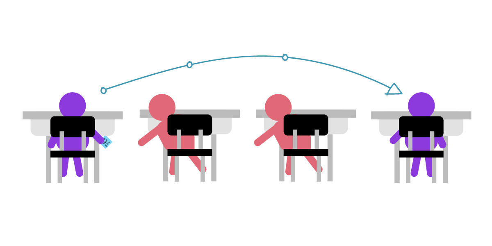
為了應對這個問題，Julia 打算把她的資訊用數值為 3 的金鑰加密，將每個字母在字母表中向下移動三位。這樣 A 會變成 D, B 會變成 E, etc. 不過這麼簡單的金鑰加密後的文字很容易被“暴力破解”。暴力破解，意思是攻擊者不斷嘗試所有可能的金鑰組合，直到資訊能被正確解密為止。
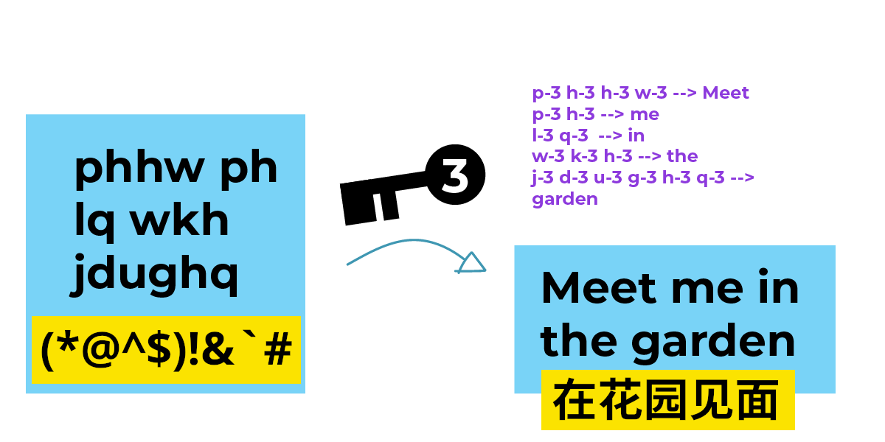
這種將資訊從字母表上偏移三位的古老方法曾被“羅馬共和國的獨裁者” 尤利烏斯·凱撒 使用，稱之為凱撒密碼。凱撒密碼是對稱加密的一個代表：它將資訊在字母表上偏移三位來加密，同時也在字母表上反向偏移三位來解密。
從上面的例子你也可以看到，凱撒密碼在密碼學上是一種非常弱的加密方式。幸運的是，凱撒密碼起，加密已經走了很長一段路。得益於各種數學演算法和計算機的幫助，當下的金鑰可以比這長得多，而且要遠遠難以猜測。對稱加密經歷了非常長的發展，並且在許多領域都有實際應用。
然而，對稱加密有一個致命的問題：如果有人直接等 Julia 和 César 交換金鑰並從中竊聽，然後偷走這個金鑰並用其解密資訊呢？如果 Julia 和 César 在世界兩端，並且沒有計劃見面呢？
我們假設 Julia 和 César 得知了公鑰加密的存在。公鑰加密讓竊聽者很難竊取解密金鑰 - 因為他們根本不需要分享解密金鑰。在公鑰加密中，加密和解密使用不同的金鑰。
公鑰加密：兩把鑰匙的故事
我們來更深入地看下這個問題：傳送者到底如何安全地將解密金鑰傳送到接收者手裡？這個問題在長距離傳輸中尤其致命，因為交流的兩方無法面對面私密地交換金鑰。
對於這個問題，公鑰加密有一套優雅的解決方案。在公鑰加密聊天中，每個人建立兩個金鑰 - 私鑰和公鑰。它們都是兩個非常大的數字，並且由一些數學性質相關聯。如果你用一個人的公鑰加密訊息，那麼他就可以用對應的私鑰解密這個訊息。
Julia 和 César 現在不傳紙條了，而是在兩臺電腦上使用公鑰加密聊天。幫他們傳紙條的同學，現在變成了在他們加密通訊中的計算機。下面是 Julia 和 César 的中間人：他們的 Wi-Fi 路由器，網際網路運營商，還有他們的郵箱服務。在現實中，他們之間可能有數百臺計算機在複製並且儲存他們傳送的訊息。
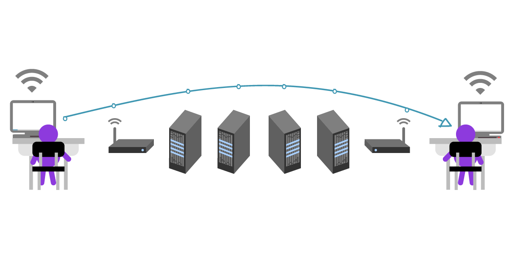
Julia 和 César 對於中間人知道他們在聊天這件事並不關心，不過他們希望訊息本身是私密的。
首先，Julia 需要 César 的公鑰。César 可以把他的公鑰通過一個不安全的方式，比如未加密的 email 傳輸。因為公鑰是可以隨意分享的，所以 César 根本不用管中間人能不能看到他的公鑰。注意，在公鑰身上，“金鑰”的比喻其實不太恰當：公鑰其實不太像現實中的鑰匙，而更像一把很難被逆向破解的鎖。為了防止中間人在金鑰交換過程中將 César 的金鑰調包成中間人的，César 同時通過多種渠道與 Julia 交換和驗證金鑰。
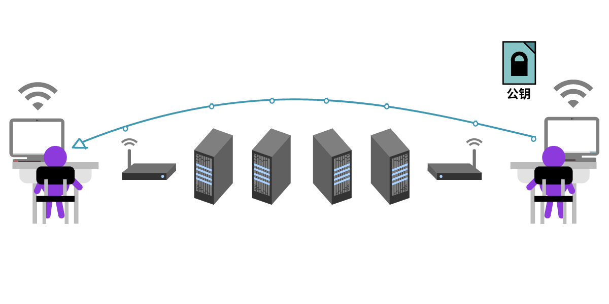
Julia 收到了 César 的金鑰，現在她可以給 César 發一條加密的訊息了！她現在用 César 的公鑰寫道："Meet me in the garden."
然後她將這個只為 César 加密的資訊發了出去。
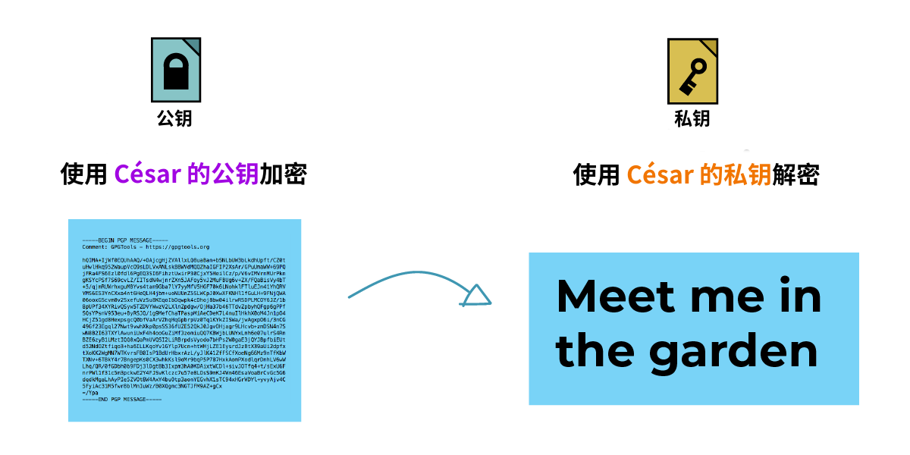
現在除了 Julia 和 César 之外沒人能理解這條訊息，因為這個訊息在他人眼裡就是一團亂麻。不過中間人依然可以看到未加密的元資料，比如標題、日期，以及發件和收件人。
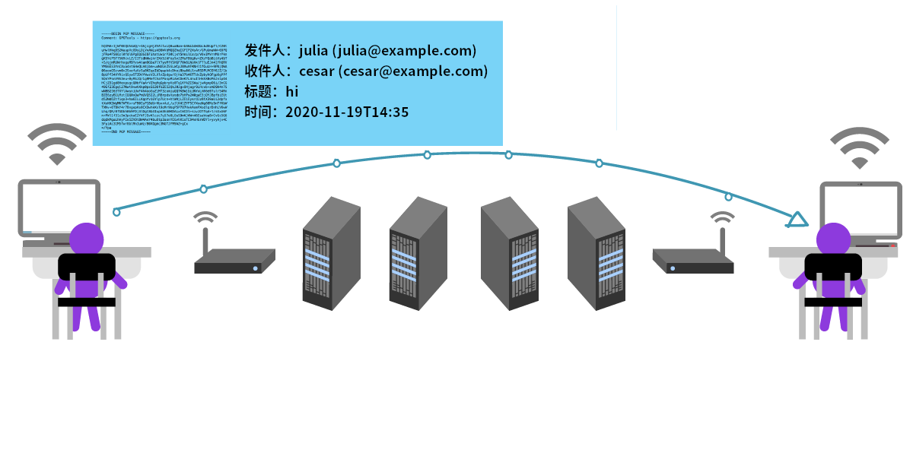
因為這條資訊使用了 César 的公鑰加密，理論上只有 César 和發件者 (Julia) 可以讀取。Julia 有著未加密的原文，而 César 則可以用他的私鑰解密訊息。
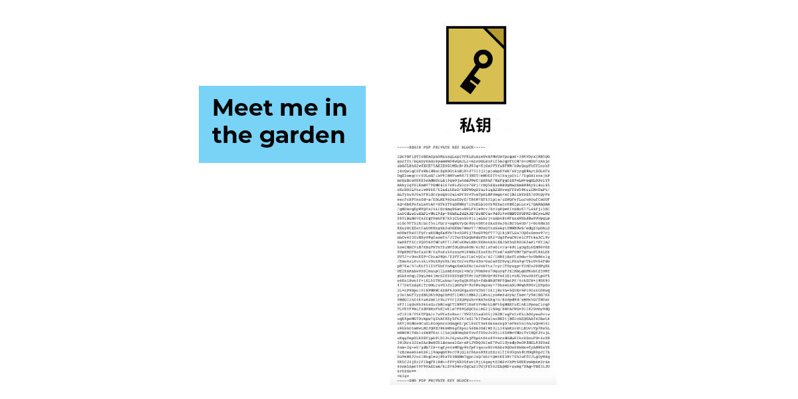
我們來回顧一下。在公鑰加密裡：
- 公鑰加密讓用於加密的公鑰能在開放，不安全的環境下傳輸
- 要給好友發加密的訊息，你需要有他們的公鑰
- 你的私鑰用於解密發給你的加密訊息
- 中間人 - 比如郵件提供商，網路運營商，還有網路上的計算機 - 依然全程可以看到未加密的元資料。這些元資料包括誰在和誰聊天，資訊在什麼時候被接收，標題是什麼，資訊是加密的... 等等。
還有一個問題：冒名頂替
在 Julia 和 César 的例子裡，中間人能全程看到訊息的元資料。
我們假設中間人裡面有一個壞蛋。壞蛋的意思也不用多解釋：一個嘗試竊取你的資訊並傷害你的人。這個壞蛋因為某些原因想要偷窺 Julia 和 César 的通訊。
我們再假設這個壞蛋成功地騙過了 Julia, 使她拿走了壞蛋的公鑰而不是 César 的公鑰。Julia 沒有意識到這點，讓這個壞蛋能接到她的訊息，偷看一眼，然後再把資訊轉給 César.
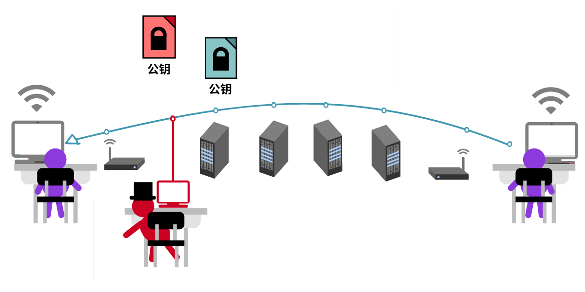
這個壞蛋甚至可以在把資訊轉給 César 之前修改其中的內容。
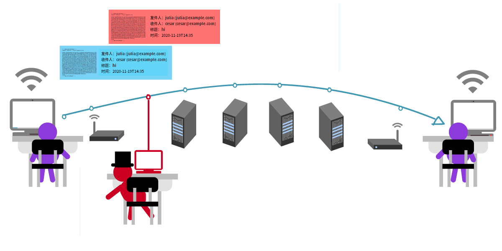
不過大部分時候這個壞蛋還是會把資訊原封不動地轉達給 César. 這樣他就能讓 Julia 和 César 都不知道他的存在，César 如約前往花園和 Julia 見面 - 草，壞蛋怎麼也在這？
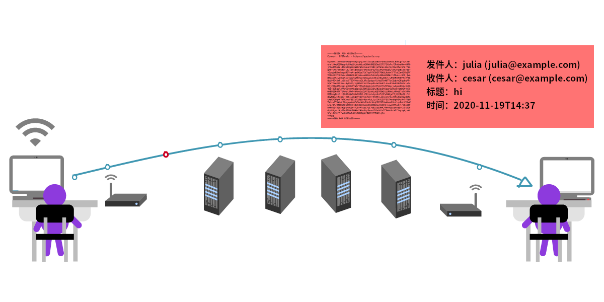
這種行為也被稱為中間人攻擊。幸運的是，公鑰加密有辦法阻止這種攻擊。
公鑰加密有一個驗證機制，叫做“指紋”。通過比對金鑰指紋，你可以搞清楚一個金鑰的真實歸屬。這個比對的過程最好在現實中完成 - 你將兩臺包含同一個公鑰的裝置放在一起，並且比較兩臺裝置上指紋的每一個字元。這樣做有點煩，不過為了保證通訊安全，它是絕對值得的。
對於一些非對稱加密實現，你也可以通過裝置上顯示的二維碼來比對指紋。在這種情況下，你只需要讓裝置互相掃碼就可以驗證指紋。
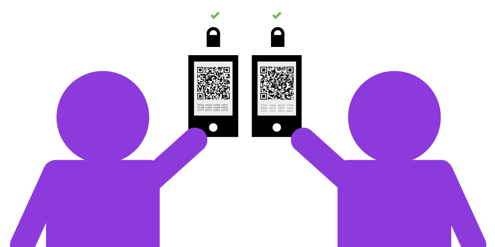
如果你無法面對面交換金鑰，你也可以將指紋通過一個相對安全的通道傳輸，比如一個本身就端到端加密的及時通訊或是一個 HTTPS 的站點。
下面的例子裡，César 用另一個端到端加密的及時通訊和 Julia 交換金鑰指紋：
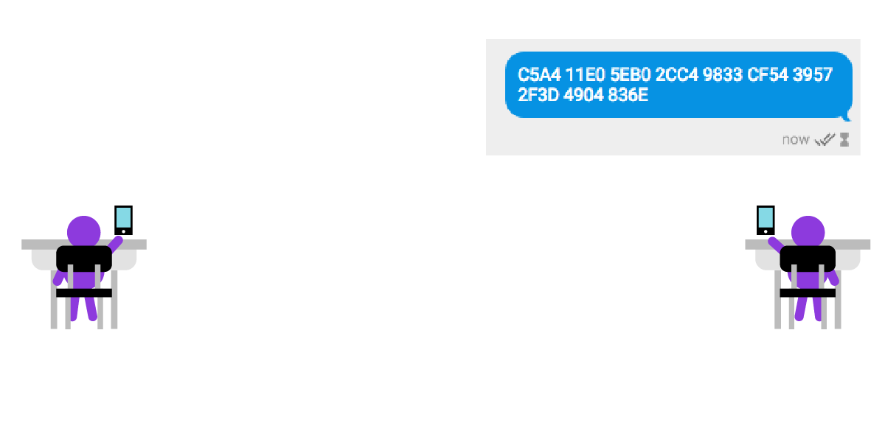
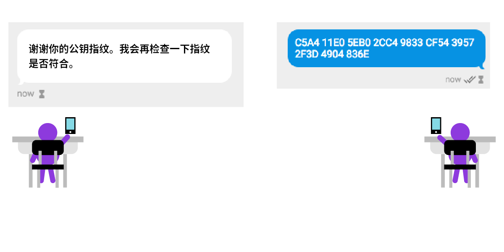
回顧：
- 中間人攻擊，指你的資訊被與聊天無關的攻擊者讀取。這個攻擊者可以選擇篡改資訊，或是簡單地竊聽。
- 公鑰加密可以通過指紋驗證來確認傳送和接收者的身份，進而有效對抗中間人攻擊。
- 你好友的公鑰除了用來加密資訊以外，還包含一個公鑰指紋。你可以通過這個指紋來確定你好友的身份。
- 私鑰也可以拿來加密資訊，或是給資訊簽名 - 我們接下來會講這個。
簽名恆久遠，一塊永流傳
公鑰加密讓你不需要擁有接收者的解密金鑰就可以加密資訊。因為公鑰只能用於加密資訊，你用這個可以和任何人分享的公鑰加密，對方則用只有自己知道的私鑰解密。
等等，還~有~一~件~事！
我們知道，使用公鑰加密的資訊可以用私鑰解密，但你知道它反過來也成立嗎？如果你用私鑰加密一個資訊，那麼這個資訊可以也只可以用你的公鑰解密。
你可能會想，這不是沒卵用嗎？因為你的公鑰是公開的，你用私鑰加密的資訊可以被任何人讀取。但請假設一個情況。你寫了一個資訊，內容是“我承諾付給張三一百塊錢”，然後你用你的私鑰加密了這個資訊。任何人都可以解密 - 但只可能是你寫了這條資訊，因為只有你有解密公鑰的對應私鑰。換句話來說，你做的事情就相當於在現實中給資訊簽名，保證這個資訊只可能來自你。
簽名還能保證沒人能篡改你的資訊。如果有人想把你的“我承諾付給張三一百塊錢”改成“我承諾付給李四一百塊錢”，因為這個人沒有你的私鑰，他也沒法重新將資訊簽名。所以，給資訊簽名能保證資訊的來源真實，而沒有被篡改。
回顧：使用公鑰加密
我們來回顧一下。公鑰加密讓你能跟任何你擁有公鑰的人傳送加密資訊。
如果別人知道你的公鑰：
-
他們也可以給你發只有你能解密的資訊
-
你可以用你的私鑰給資訊簽名，保證這個資訊來自於你並且沒有被篡改
如果你知道一個人的公鑰：
- 你也可以通過他們的公鑰驗證一個資訊來自他們。
現在你應該清楚，知道你公鑰的人越多，公鑰加密對於你而言就更有用。公鑰是可以像電話號碼一樣隨意分享的，你可以把它隨意分享給想和你加密聊天的人，而不用擔心中間有誰看到了你的公鑰。
noarch 注0：如果端到端加密在你所在的地區非法，或是有人禁止你使用加密通訊，那麼你最好不要“公開”有關你真實身份的公鑰；否則敵人可能只因為你在使用加密通訊這件事就可以逮捕你。
在一對金鑰中，公鑰對應其私鑰。私鑰才是你要真正好好保管的“鑰匙”。它可以用來解密，或加密（簽名）訊息。
私鑰一定要安全保管。如果你不小心刪除了你的私鑰，或是丟失了儲存它的裝置，你將無法解密訊息。如果有人通過投放病毒或是通過偷走你裝置的方式獲取了私鑰，他們也可以解密你的資訊。同樣地，他們也能假裝你簽名信息。
政府竊取人們私鑰的行為並不新鮮。他們可以勒索人們的電腦，利用後門或是釣魚等方式投放病毒來竊取目標的私鑰。一旦你的私鑰被竊取，所有公鑰加密給你提供的安全和隱私保護就消失了。這就好比你在家門上安裝了一把撬不開的鎖，但有人偷走並複製了你的鑰匙。在這種情況下，他們無需撬鎖就可以暢通無阻地闖入你家。
說到底，公鑰加密的安全性取決於你在對抗誰的監控，這叫做威脅建模：知道你的敵人是誰，並且針對性地防禦他們。比如如果你想讓你的私鑰在黑客面前難以獲取，你就不應該使用瀏覽器外掛來進行端到端加密，而是改用隔離、斷網的儲存。這樣你的私鑰就真正儲存在自己的裝置上，而不是存在一些“雲端儲存”上。
公鑰加密的實際應用：PGP
我們剛剛用兩個不同的概念介紹了公鑰加密和對稱加密。然而，其實公鑰加密背後也使用對稱加密！公鑰加密中的私鑰使用對稱加密，然後這個加密後的私鑰可以被用於解密實際的訊息。
PGP 則是一例同時使用對稱加密和公鑰（非對稱）加密的協議。功能上，如果你使用 PGP, 你應該對公鑰加密的使用非常熟悉了。
“金鑰”到底是什麼？公鑰和私鑰的關係是什麼？
要進行公鑰加密，前提得有兩個金鑰：一個用於加密，一個用於解密。
我們說到了，用於加密的公鑰可以隨意分享：你可以把它隨意散播，例如放在一個金鑰伺服器上，這樣人們才能給你發加密訊息。隨意散播公鑰不會破壞你加密資訊的安全。
noarch 注1：見回顧：使用公鑰加密
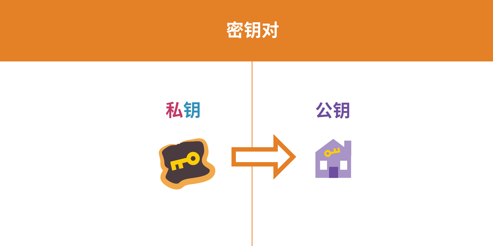
與公鑰對應的是另一個檔案，私鑰。與公鑰相比，私鑰才是一把真正需要保護的“鑰匙”，它同時可以用來簽名（加密）和解密資訊。
我們來詳細看看一個公鑰加密演算法：RSA (Rivest-Shamir-Adleman). PGP 一般使用 RSA 生成金鑰對。
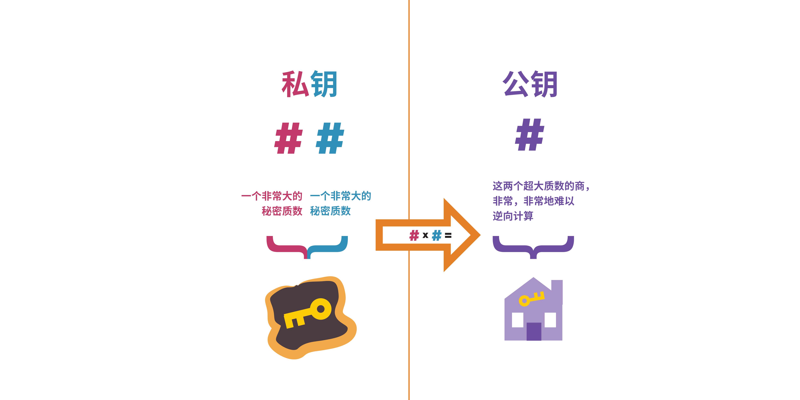
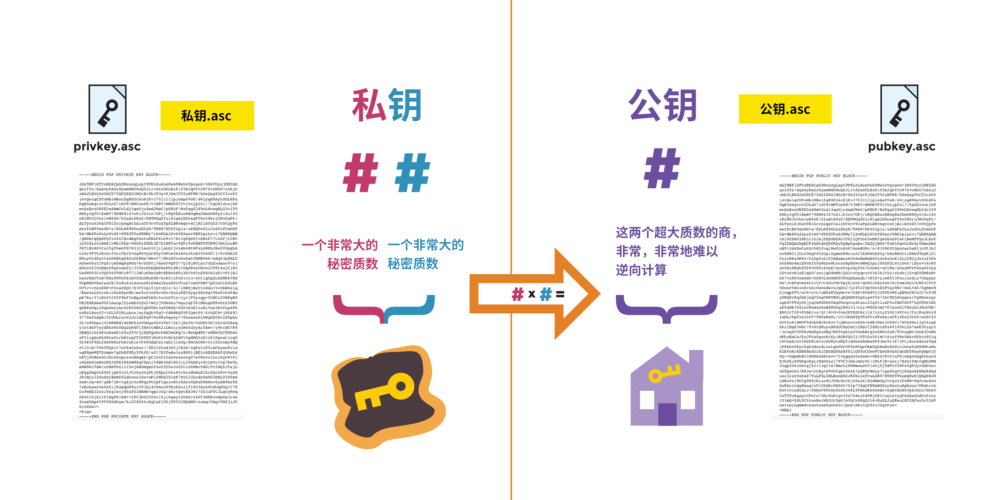
在金鑰生成時，公鑰和私鑰是一起生成的，並且緊密聯絡：它們都依賴一組非常大的質數。私鑰代表其中兩個質數；而你可以想象公鑰是這兩個質數的商，它可以輕易由私鑰中的這兩個質數得出，而攻擊者很難通過公鑰的這個數反推出私鑰原有的兩個質數。
這個問題叫做質數分解，一些公鑰加密的實現通過質數分解的難度來保證安全性。現代加密技術使用隨機生成的質數，並且這個質數大到可怕，人類和計算機都很難猜出來。
最重要的是，公鑰加密讓人們能夠通過不安全的方式交換公鑰，並從此開始加密通訊！在這個過程中，用於解密的私鑰從來不會出現在網際網路上，因為加密只需要專門用於加密的公鑰。
記住：要在兩個人之間使用公鑰加密，你們需要互相擁有對方的公鑰。
當然你也可以用另一種方法來想象公鑰加密：它們之間的關係就像陰和陽的關係，但糾纏得清。
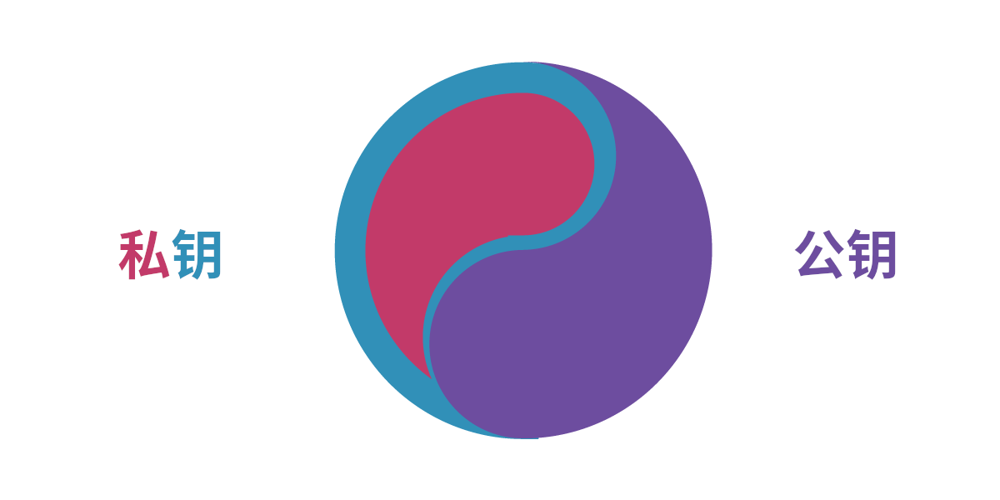
公鑰可以隨意散播。你可以把它給任何人 - 如果你不怕公鑰包含自己的郵箱地址，你可以把它放在個人部落格上，你甚至可以把它放在社交媒體上...
noarch 注2：根據各地區的法律法規不同，在散播之前請檢查這樣做的風險。以中國為例，因為公鑰包含你的郵箱地址（你使用的郵箱可能是翻牆獲取的，這是一個“我在翻牆”的訊號），noarch 不建議將公鑰放在金鑰伺服器上，或是在微博 / 微信朋友圈等地傳播。請僅在必要時單獨發給需要加密通訊的人，至少讓你的加密通訊不那麼顯眼。
原文這麼說是因為筆者假設你居住在美國，而美國及其各州法律目前允許端到端加密通訊。
你需要安全地儲存私鑰。你只有一個私鑰，所以絕對不要意外丟失它，或者隨意複製；絕對不要分享它，或者以任何方式將其在網際網路上傳輸，因為這樣做會傷害這個金鑰對的安全性。
noarch 注3：原文“你只有一個私鑰”意為一個金鑰對中只能有一個私鑰。你可以擁有不同的身份，而這些不同的，隔離的身份之間需要有不同的金鑰對，這樣敵人無法將這些身份簡單地連線起來。
PGP 如何工作
說了這麼多，我們來以 PGP 為例子，具體看看公鑰加密如何工作。我們假設你要給張三發一個加密訊息：
-
張三生成了一堆金鑰並擁有其私鑰，他把公鑰放在了它應用了 HTTPS 加密的個人網站上。
-
你從張三的網站上下載並匯入了張三的公鑰。
-
你用張三的公鑰加密了訊息，然後將加密後的訊息發給了他。
-
因為只有張三有他自己的私鑰，除了他之外沒人能看到你給他的加密訊息。
PGP (Pretty Good Privacy) 最具標誌性的功能就是其生成金鑰對的過程。你用它生成一個金鑰對，然後用密碼保護這個金鑰對中的私鑰。你可以用你的私鑰來簽名，或是用你的公鑰來加密訊息。
元資料：公鑰加密的限制
PGP 的主要功能就是保護資訊的內容私密，真實且未被篡改。不過你要考慮的隱私問題遠不止這些。綜上所述，元資料洩露的隱私可能和加密後內容本身洩露的隱私一樣多。
比如，如果你和你所在地區已知的異議分子交談，光是與它們通訊，即使資訊未被解密，就可能將你置於危險之中。在某些國家和地區，光是拒絕解密訊息這點你就可能被判處監禁。
實際上，保持匿名（“誰與誰通訊”）比保持隱私（“內容是什麼”）要難得多。在 PGP 的例子裡，一個保持匿名的方法就是讓雙方都使用 Tor, 並搭配一個匿名註冊的郵箱。這種情況下，在 Tor 的匿名保護之上，PGP 依然能保持資訊的隱祕性和真實性。
noarch 注4：如果你在中國，你無法直接使用 Tor.
privacy.noarch講解了繞過審查訪問 Tor 的方法。
現在你熟悉了公鑰加密的基礎，你可以試試一些公鑰加密工具了！
試試 [Android/iOS] Signal, [Android] OpenKeychain, 或是 [Desktop/All] Thunderbird.
原文使用 CC BY 3.0 US 許可協議授權；本譯文使用 CC BY-SA 4.0 許可協議授權。
本譯文部分參考現有（過時）的譯文：公開金鑰加密和 PGP 簡介，由臺灣開放文化基金會及其志工翻譯。
privacy.noarch 與原文釋出者電子前哨基金會無隸屬關係；轉載本譯文請同時註明本文和原文。